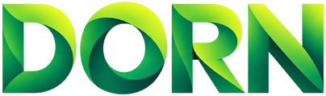

Última actualización: 24 de septiembre de 2026
Al usar DORN AGRO aceptas estas condiciones.
Una plataforma de monitoreo y control de riego con sensores, una bomba de nanoburbujas controlada por un ESP32-S3 y un asistente de inteligencia artificial. Es un proyecto estudiantil en etapa de prototipo.
El plan Gratis no tiene costo. El plan Premium tiene un valor de $5.000 CLP al mes; mientras el proyecto está en prototipo, su activación en la app es solo de demostración y no genera cobros.
El servicio se entrega «tal cual», sin garantía de funcionamiento continuo. Podemos modificar funciones o estas condiciones; los cambios se publicarán en esta página.